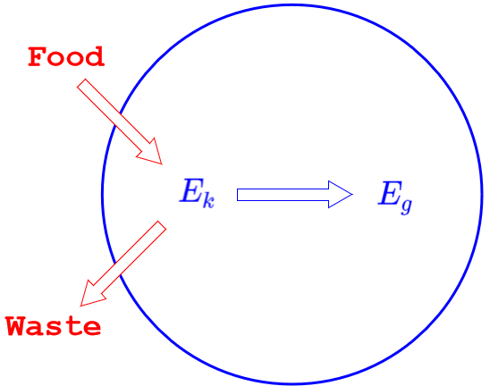

Force
A force is an interaction in which two objects push or pull on each other.
- Force is measured in newtons:$$\mathrm {N = kg\cdot {m\over s^2}}$$
- A newton is the amount of force needed to make a 1-kilogram object accelerate at 1 m/s2.
- Force is a vector; it acts in a specific direction.
Some common forces are:
- Gravity: An attractive force between masses.
- Elastic: Exerted by a stretched or compressed object trying to return to its original shape (bow, spring, bungee).
- Tension: Exerted by an object that does not stretch (rope, rod).
- Normal: Exerted by a surface (ground, floor, table) on an object in contact; acts perpendicular to the surface.
- Friction: Exerted by a surface on an object opposite to the motion; acts parallel to the surface.
- Air Resistance: Exerted by air (or other gases) on objects moving through.
- Applied: Exerted by a person, animal, or machine.
- Others: Buoyancy, Electric, Magnetic, Nuclear
Energy Transformations
When a force acts on an object, it may cause the object’s kinetic energy to change.
The amount of kinetic energy transformed is called the work done by the force $$W = \Delta E_k$$
- A force that acts in the direction of motion (or at less than 90°) will cause an increase in kinetic energy (a positive amount of work).
- A force that acts opposite to the direction of motion (or at more than 90°) will cause an decrease in kinetic energy (a negative amount of work).
- If more than one force does work on an object, the change in kinetic energy is equal to the total work done by all forces.
$$\Delta E_k = \Sigma W$$
According to the Law of Energy Convervation, the kinetic energy gained (lost) must come from (go) somewhere.
Example 1
Identify the forces and describe the energy transformations / work done for a student pushing a crate up a ramp.
| Force | Transforms... | Into... | Work |
|---|---|---|---|
| Applied | Chemical (Food) Energy | Kinetic Energy | + |
| Gravitational | Kinetic Energy | Gravitational Potential Energy | − |
| Friction / Air Resistance | Kinetic Energy | Thermal and/or Sound Energy | − |
Example 2
Suppose the student does 9.0 joules of work. The crate reaches the top of the ramp with 5.0 J of gravitational potential energy and 3.0 J of kinetic energy. Draw energy bar charts for the bottom and top of the ramp, and an energy flow diagram.
An energy flow diagram illustrates the energy transformations that have occured...

- The circle represents the boundary between the system and its environment.
- The arrows represent the energy transformed (work done) by each of the three forces.
- Work done by a force always involves a gain or loss of kinetic energy.
- The change in kinetic energy (+3.0 joules) is the total of the work done by all three forces.
- An energy flow diagram combined with “initial” and “final” energy bar charts is sometimes called a LOL Diagram.
- The L’s represent the axes of the bar charts and the O represents the system / environment boundary.